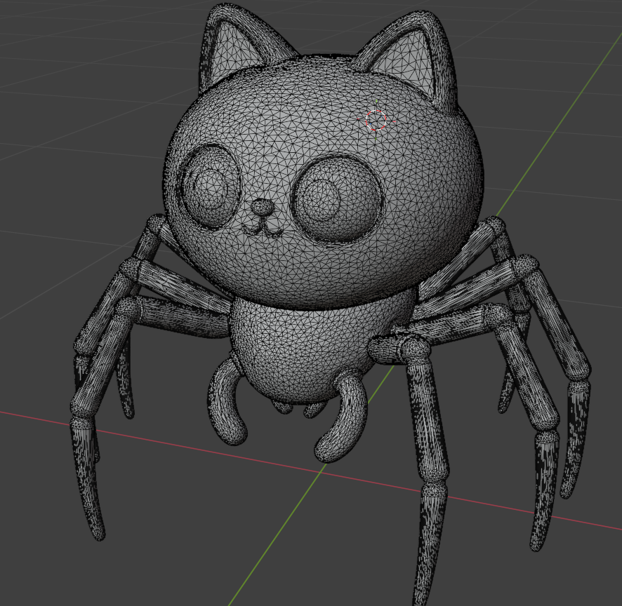

projects
CatSpider
CatSpider

Generating and preparing the model
The model generated with Hunyuan3D

The model after cleanup

Rigging
I built a custom skeleton for the character.

Control Rig setup

Foot locking
1. Set the gait cycle
The legs need to swing faster as the body picks up speed, so I adjust the gait cycle based on movement speed.
- Calculate the duration of a cycle at the current speed (
CycleLengthInSeconds).

- Adjust how quickly the cycle advances.

2. Update the booleans in FootLockedArray
- Compare
saturate(FootOffset[i] + CyclePercent)withSwingPercent.- Move the foot during the swing phase and lock it for the rest of the cycle.
- The graph below updates the lock state for each foot.

3. Update the foot position when it unlocks

Computing foot positions in world space
1. Predict stride length
First, choose where the foot should land.
PredictedFootTransforms = WorldFinalFootTransforms + Velocity * Something

S = SwingPercentis the fraction of the cycle spent in swing.p = PerFootCyclePercentis this foot’s current progress through the cycle.T = CycleLengthInSecondsis the duration of a complete gait cycle.v = Velocityis the body’s world-space velocity.
The prediction looks ahead by two intervals.
0 S S + ½(1-S) 1
|------ swing -----|-- first half of stance --|-- second half ----|
current p touchdown midstance
Touchdown: the foot lands ahead of the body.
↓
Midstance: the body catches up and the foot is roughly underneath it.
↓
Just before liftoff: the body has passed the foot, leaving it behind.
2. Foot Lift
The vertical (Z) offset comes from a curve.
- X is the foot’s progress through swing.
- Y sets the lift height.

3. Trace the ground at the landing point

Trace vertically through the predicted landing point and place the foot at the hit position.

An improved version of the trace setup

Updating the pose
Apply Full Body IK to the updated foot targets.